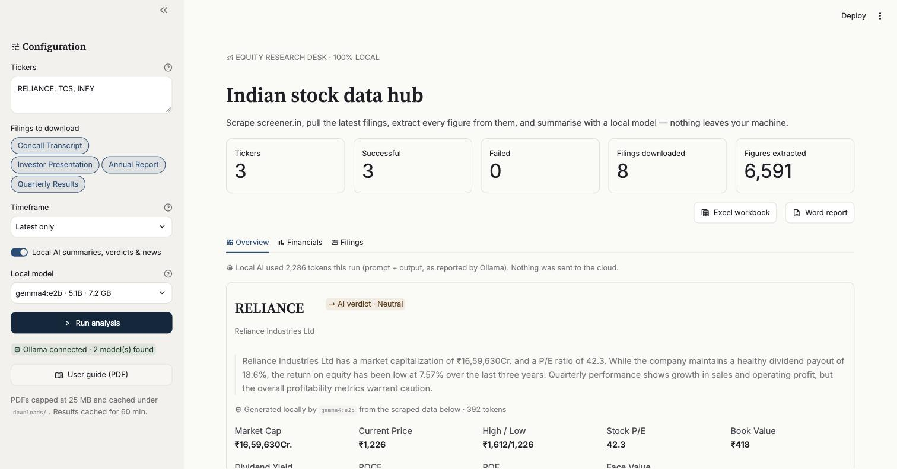
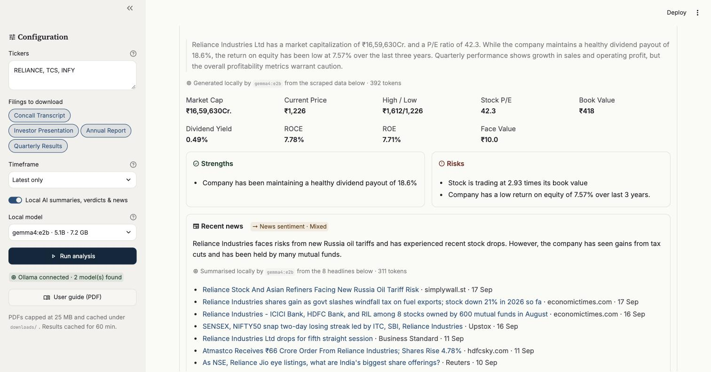
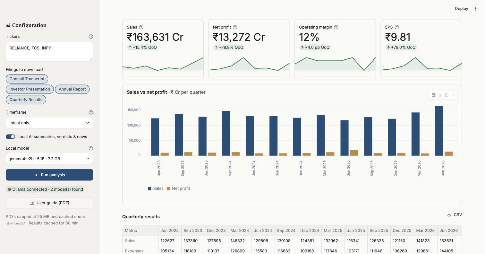

A free, open-source research desk for Indian listed companies. Enter a few ticker symbols and get each company's key numbers, quarterly trends, latest filings, recent news and a plain-English analysis, then export it all to Excel and Word. The optional AI runs entirely on your own computer.
You type in company tickers; the app collects public information about each one, organises it, and optionally asks a local AI model to summarise it.
The AI part is optional. Without it you still get all the data, charts, news headlines and reports.
Here's what your computer needs. Setting everything up takes 15 to 30 minutes the first time, mostly waiting for downloads.
| You need | Details |
|---|---|
| A computer | Windows 10 or 11, macOS, or Linux |
| Python 3.10 or newer | The programming language the app is written in. Free from python.org/downloads. Chapter 3 shows how to check whether you already have it. |
| Internet connection | To fetch company data, filings and news. The AI itself works offline. |
| Disk space | About 500 MB for the app and its libraries, plus room for filings (roughly 10 to 40 MB per company). The AI model is extra: 0.4 to 8 GB. |
| Memory (RAM) | 4 GB is enough without AI. For the recommended AI model, 16 GB or more. |
| A web browser | Chrome, Edge, Firefox or Safari. The app opens in your browser but runs on your computer. |
# in this guide are comments; you don't type them.Five steps, done once. After that, starting the app is a single command (step 5).
python --versionpython3 --versionbrew install python), or with your Linux package manager.Easiest: on the project's GitHub page, click the green Code button, then Download ZIP. Unzip it somewhere easy to find, such as your Documents folder.
With git (if you have it):
git clone https://github.com/tapariapurv/indian-stock-data-hub.gitThen move into the project folder. Replace the path with wherever you put it:
cd Documents/indian-stock-data-hubThis keeps the app's libraries separate from anything else on your computer. You do this once, inside the project folder.
python -m venv .venv
.venv\Scripts\activatepython3 -m venv .venv
source .venv/bin/activateYour prompt now starts with (.venv). That means the environment is active.
.venv\Scripts\ in front of the commands in steps 4 and 5, for example .venv\Scripts\python -m pip install -r requirements.txt.python -m pip install -r requirements.txtThis downloads Streamlit (the app framework), the PDF reader, and the Excel and Word writers. It takes a minute or two.
python -m streamlit run app.pyYour browser opens at http://localhost:8501. If it doesn't, open that address yourself. The first time, Streamlit may ask for an email address; just press Enter to skip.
To stop the app, click the terminal window and press Ctrl C. To start it again another day, open a terminal in the project folder, activate the environment (step 3's second line), and run step 5.
The AI verdicts, analyses and news digests come from Ollama, a free program that runs AI models on your own computer. Skip this chapter if you only want the data and reports.
| System | How |
|---|---|
| Windows | Download and run OllamaSetup.exe from ollama.com/download |
| macOS | Download from ollama.com/download, drag Ollama into Applications and open it. Or: brew install ollama |
| Linux | curl -fsSL https://ollama.com/install.sh | sh |
The Ollama desktop app starts automatically; look for the llama icon in your menu bar or system tray. If you installed it from the command line, start it with ollama serve and leave that window open.
To check, open http://localhost:11434 in your browser. It should say Ollama is running.
Pick one based on your computer's memory, then run the matching command. This is a one-off download.
| Your RAM | Command | What to expect |
|---|---|---|
| 16 GB or more | ollama pull gemma4:e2b | Recommended 7.2 GB download. Accurate, quotes the right numbers, about 2 seconds per summary on a recent laptop. |
| 24 GB or more | ollama pull gemma4:e4b | Larger and more capable. The app prefers it when installed. |
| 8 GB | ollama pull qwen2.5:0.5b | Basic 0.4 GB and very fast, but in testing it sometimes called weak numbers strong. Treat its verdicts with extra caution. |
Any other chat model from ollama.com/library also works.
Refresh the app in your browser. The sidebar shows a green Ollama connected badge, and the Local model list shows the models it found, most capable first. No keys, no sign-up. Downloaded another model later? Just refresh the page.
Everything is controlled from the sidebar on the left. The defaults work well, so you can simply press Run analysis.

| Sidebar control | What it does |
|---|---|
| Tickers | The companies to analyse, separated by commas, e.g. RELIANCE, TCS, INFY. Use screener.in symbols; chapter 8 shows how to find them. Start with 1 to 5 companies. |
| Filings to download | Click to turn each filing type on or off: concall transcripts, investor presentations, annual reports and quarterly results. Fewer types means a faster run. |
| Timeframe | How many of each filing to fetch: latest only (fastest), the last 2 or 4, or all available. |
| Local AI switch | Turns the AI verdicts, analyses and news digests on or off. Greyed out if Ollama isn't running. |
| Local model | Which of your installed AI models to use, with its size. |
| Run analysis | Starts the run. Changes to the controls above only apply when you press it. |
| User guide (PDF) | Opens this guide. |
How long does it take? The first run for a company takes 20 to 60 seconds, mostly downloading and reading its PDFs. A progress bar shows which company is being processed. Results are remembered for an hour, so re-running is almost instant, and downloaded PDFs are kept in the downloads folder so they are never fetched twice.
Results are organised into three tabs: Overview, Financials and Filings.


Pick a company at the top. The four cards show the latest quarter's sales, net profit, operating margin and EPS. The small arrow shows the change from the previous quarter; the line underneath shows the last 8 quarters. Below are a chart of 13 quarters and the complete table, which you can download as CSV.
For each company: which filings were downloaded (or why one was skipped, for example because it was larger than 25 MB or wasn't a PDF), with links to the originals. Expand All document links to see every document screener.in lists for the company.
The Excel workbook and Word report buttons appear above the tabs after a run. Both contain everything from that run.
Totals and changes are live formulas, so they update if you edit the numbers. Sheets print landscape, one page wide.
The Word report shows 5 quarters so the table fits the page. The Excel workbook has all of them.
The app uses the symbol from the company's page address on screener.in, which is usually its NSE symbol.
/company/ is the symbol. For screener.in/company/HDFCBANK/ it's HDFCBANK.| Company | Symbol | Company | Symbol |
|---|---|---|---|
| Reliance Industries | RELIANCE | HDFC Bank | HDFCBANK |
| Tata Consultancy Services | TCS | ICICI Bank | ICICIBANK |
| Infosys | INFY | State Bank of India | SBIN |
/company/ on screener.in is what the app needs.The AI runs on your computer through Ollama. None of your data is sent to an AI company.
Only ordinary web requests for public pages: company data from screener.in, filing PDFs from the stock exchanges and company websites, and headlines from Google News, Bing News, Economic Times, Livemint, Business Standard and Hindu BusinessLine. The app has no accounts, no tracking and no analytics.
| AI task | Input | Typical tokens |
|---|---|---|
| Verdict and analysis | Key ratios, the last two quarters' results, and up to 4 strengths and 4 risks | ≈ 400 |
| News digest and sentiment | Up to 8 headlines (not the full articles) | ≈ 300 |
| Error explanation | The error message, only when a company fails | ≈ 100 |
A token is roughly ¾ of a word. The app keeps usage low: it sends only clean, structured data (the thousands of PDF numbers are too noisy); caps every reply's length; switches off hidden "thinking"; and reuses answers for an hour (30 minutes for news), so re-running never pays twice for the same data. The Overview tab shows exactly how many tokens each run used.
The app fetches public pages the way a browser does, pauses between companies, and keeps downloaded PDFs so they're never fetched twice. Please keep it that way: analyse a handful of companies at a time, and respect each website's terms of use.
Most people never need these.
The app looks for Ollama at http://localhost:11434. To use a different port, or a more powerful computer on your network, set OLLAMA_HOST before starting the app. This is the same setting Ollama itself uses.
$env:OLLAMA_HOST = "192.168.1.20:11434"
python -m streamlit run app.pyOLLAMA_HOST=192.168.1.20:11434 \
python -m streamlit run app.pypython -m streamlit run app.py --server.port 8502app.py)| Setting | Default and meaning |
|---|---|
MAX_FILE_MB | 25. Filings larger than this are skipped. |
CACHE_TTL_SECONDS | 3600. How long company results are reused. |
NEWS_MAX_AGE_DAYS / NEWS_MAX_ITEMS | 14 / 8. How recent news must be, and how many headlines to keep. |
OLLAMA_MODEL_PREFERENCE | The order in which installed models are suggested. |
To force a completely fresh run, open the ⋮ menu at the top right of the app and choose Clear cache. Downloaded PDFs live in the downloads folder; delete it to free disk space (it's recreated when needed).
Find what you see in the left column.
| What you see | What to do |
|---|---|
python or python3 "not found" | Install Python from python.org (chapter 3, step 1). On Windows, re-run the installer and tick Add python.exe to PATH, then open a new PowerShell window. |
| "running scripts is disabled on this system" (Windows) | Don't activate the environment; prefix commands with .venv\Scripts\ instead, e.g. .venv\Scripts\python -m streamlit run app.py. |
Errors during pip install | Check python --version is 3.10 or newer, then upgrade pip and retry: python -m pip install --upgrade pip. |
| "No module named streamlit" | The environment isn't active. Run the activate command from chapter 3, step 3, then try again. |
| "Port 8501 is already in use" | The app is already running in another window, so use that one. Or start it on another port: --server.port 8502. |
| What you see | What to do |
|---|---|
| A company shows Failed | Usually a wrong symbol: check it on screener.in (chapter 8). It can also be a network problem or the site temporarily limiting requests; wait a few minutes and try again. With AI on, the card explains the problem in plain English. |
| A filing says Skipped | It was over 25 MB, or the link led to a web page rather than a PDF. The rest of the analysis is unaffected. |
| "No news in the last 14 days" | Normal for smaller companies. The news sources simply had nothing that named the company. |
| Numbers look out of date | Results are reused for an hour. Use ⋮ → Clear cache, then run again. |
| What you see | What to do |
|---|---|
| Sidebar says Ollama not detected | Start Ollama (open the app, or run ollama serve), then refresh the page. Check localhost:11434 says Ollama is running. |
| Connected, but the model list is empty | No model installed yet: run ollama pull gemma4:e2b (chapter 4, step 3) and refresh. |
| "… returned no summary for this ticker" | Update Ollama to the latest version (0.9 or newer is required), or pick another model from the list. |
| The first AI answer is slow | The model is loading into memory, which can take 10 to 30 seconds. Later answers take a second or two. |
| Computer slows down | The model is too large for your RAM. Choose a smaller one. ollama list shows installed models; ollama rm <name> removes one. |
| What you see | What to do |
|---|---|
| Excel or Word warns about the file | Please report it (see the project's GitHub Issues page) with the tickers you used. Both files are checked automatically before download, so this shouldn't happen. |
| Totals show 0 in a file previewer | Some previewers (e.g. macOS Quick Look) don't calculate formulas. Open the file in Excel, Numbers, LibreOffice or Google Sheets. |
The terms you'll meet in the app, in plain language.